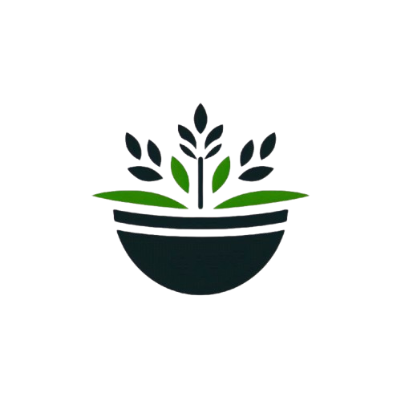
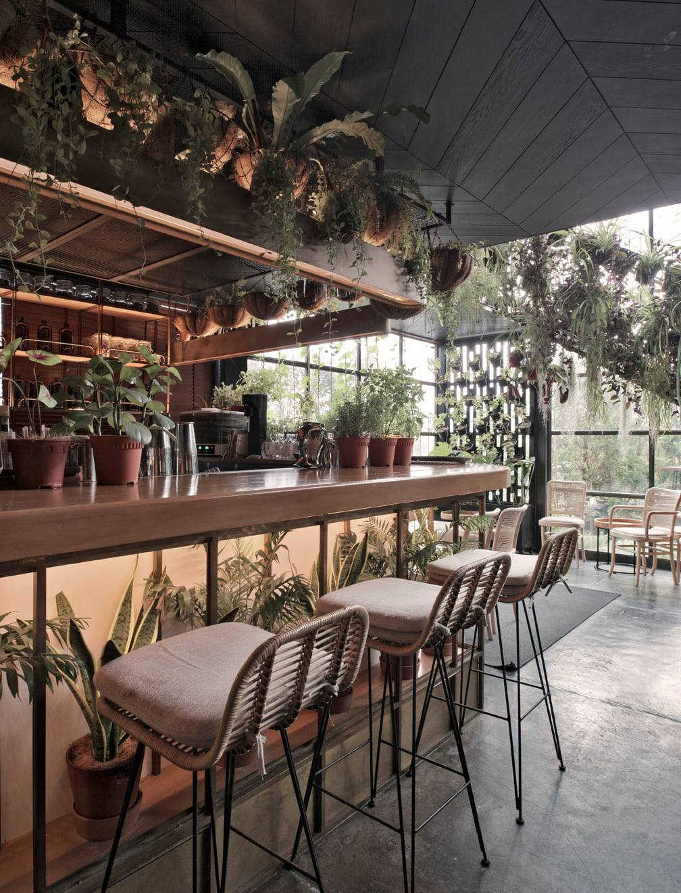
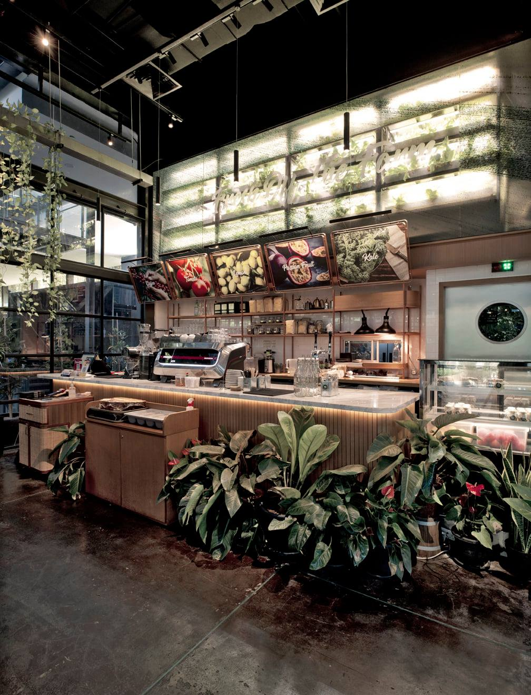
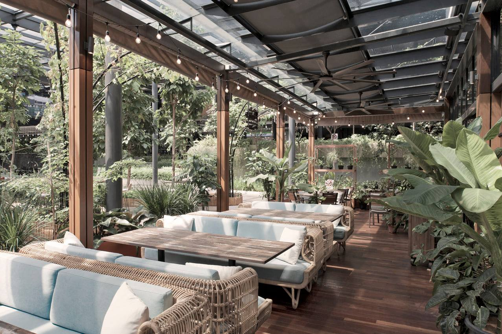
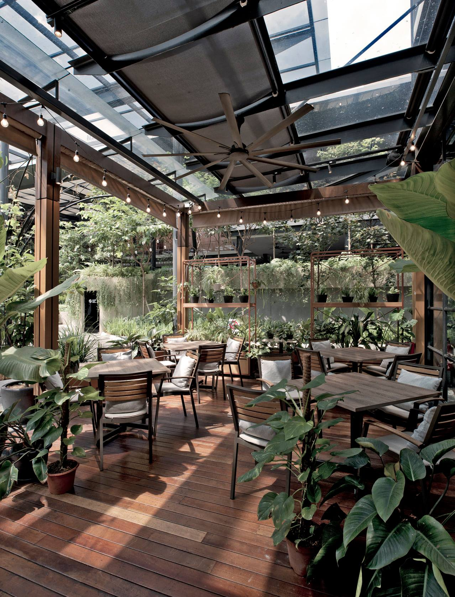
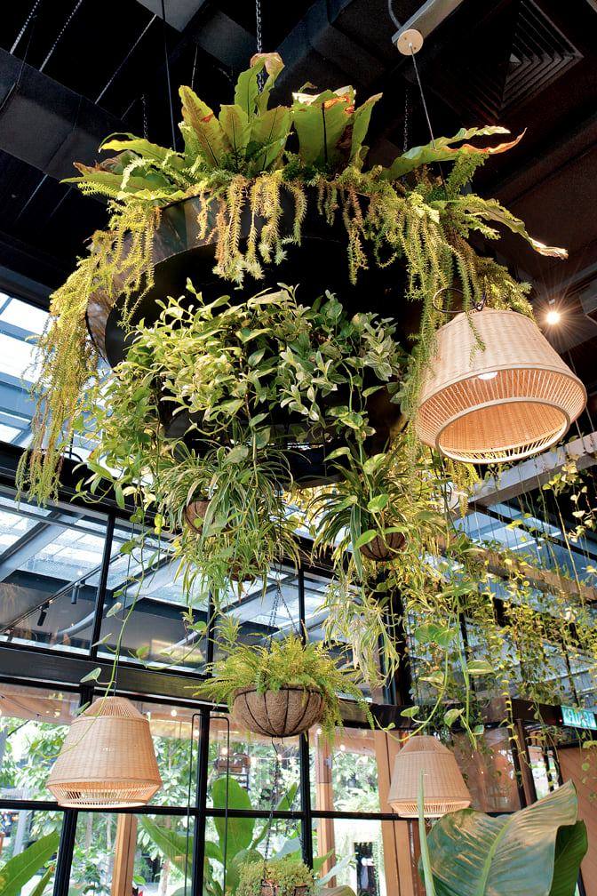
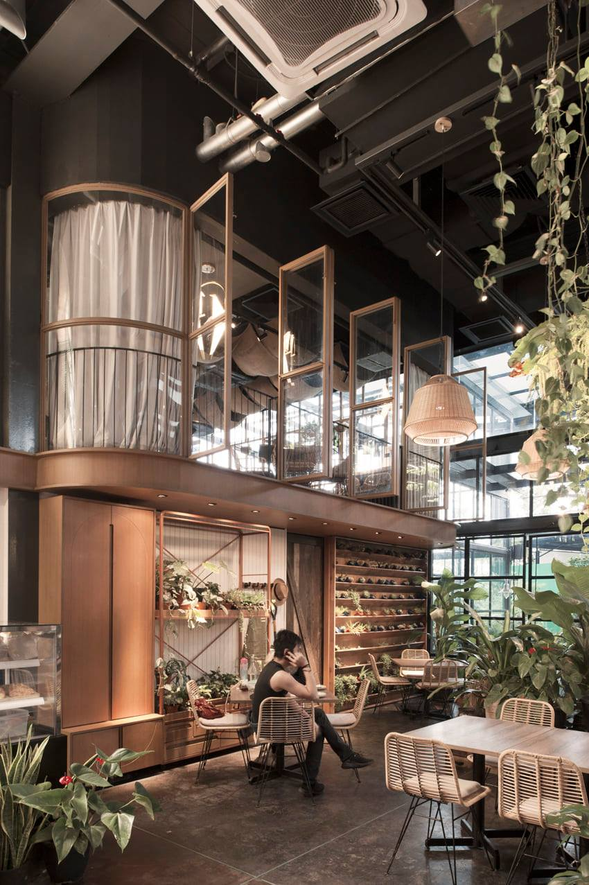

Le Natu

02 99 65 64 21
Votre Restaurant
Le Natu
à NantesUn cadre vert, une cuisine vraie
Notre cuisine allie simplicité et authenticité, inspirée par la nature.
Nous privilégions des ingrédients frais et locaux, dans un cadre chaleureux où le bois et les plantes créent une atmosphère apaisante et conviviale.
Nous privilégions des ingrédients frais et locaux, dans un cadre chaleureux où le bois et les plantes créent une atmosphère apaisante et conviviale.


“ Chez Le Natu, chaque plat est une ode à la simplicité naturelle, où authenticité et saveurs se rencontrent pour un voyage culinaire unique ”
— Chef Laurent Dupont -




Dernières actualités
du Restaurant Le Natu
Jeudi 12 juillet 2024
Nouvelle carte pour la saison
Le Natu est fier de dévoiler sa toute nouvelle carte,
spécialement élaborée pour célébrer les saveurs de la saison. Notre chef Laurent Dupont a revisité les classiques du restaurant, tout en introduisant de nouvelles créations...
spécialement élaborée pour célébrer les saveurs de la saison. Notre chef Laurent Dupont a revisité les classiques du restaurant, tout en introduisant de nouvelles créations...